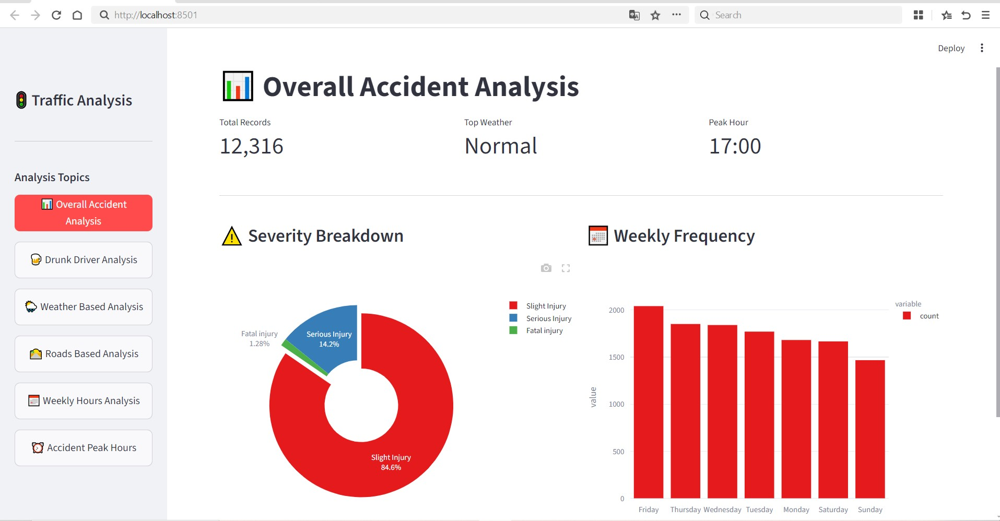

Back to Portfolio
Data science · Infosys Springboard
Accident Analysis System

A data analysis project completed as part of the Infosys Springboard "Data Science with Python" program (AICTE). It's an interactive Streamlit dashboard that explores a dataset of over 12,000 traffic accident records — breaking them down by severity, weather conditions, road type, day of week, and time of day to surface clear, actionable insights.
Key Features
- Analyzes 12,300+ accident records to surface top weather conditions and peak accident hours
- Severity breakdown (slight / serious / fatal) visualized as an interactive donut chart
- Weekly frequency analysis showing accident counts by day of the week
- Additional views for drunk-driver analysis, weather, road type and hourly patterns
- Data cleaning and preprocessing with Pandas & NumPy, visualized with Matplotlib and Streamlit
Technologies Used
PythonPandasNumPyMatplotlibStreamlit
Program
Completed through Infosys Springboard's "Data Science with Python" program, affiliated with AICTE, focusing on hands-on data analysis, preprocessing, and visualization techniques.
View Certificate